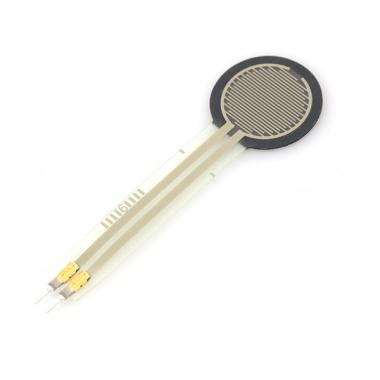
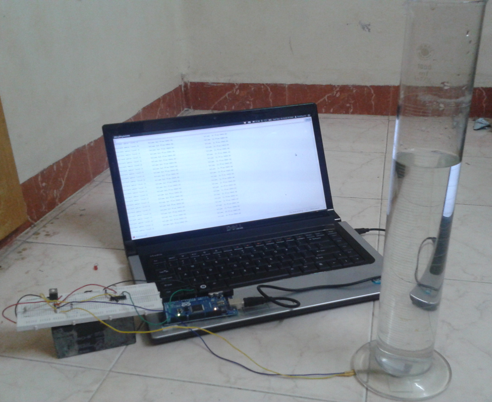

Mobile Extensible Robotic Inspection System (MERIS)
Guide:
Prof. Krishnan Balasubramanian, IIT Madras (September 2012 - present)
Abstract
The objective is to design and develop a mobile system equipped with wireless video feedback for the inspection of low temperature heat exchangers in thermal power plants. The robot has to be equipped with an actuator that can expand upto 30 times its nominal length. Inspection has to be done in extremely confined spaces; this necessitates a highly portable / compact native state.
Position control of Servo via gesture recognition
Guides
Professors Singaperumal M., Manivannan P V, and Somashekhar S, IIT Madras. Course: Mechatronic Systems. April 2012
Abstract
The objective is to demonstrate the use of image processing systems to recognize hand gestures, and take corresponding actions.
Actuator control, in its simplest form, can be represented by the position control of a servo-motor.
Designed and developed an Autonomous Robot that solves a known grid while transferring cylindrical objects as part of the problem statement of the International Robotics Competition, Robocon 2011.
This is a video of our bot performing at the National Round in Pune, India:
Water metering using pressure transducers
Guide
Prof. T. Swaminathan, IIT Madras
Abstract
The commercial water consumption metering solutions available in India are far from accurate, and are highly prone to damage. Moreover, the principle of operation is fluid flow with most of them using a rotating turbine with an encoder to measure flow. This means that if the water supply is inconsistent as in most places in India, the air that is clogged in the pipe is also measured. This leads to large errors, and excessive payment by consumers.
The proposed alternative is to measure an alternative quantity, the hydrostatic pressure. A pressure transducer is used to gauge the height of the water column. The sensor response is characterized, and the cross sectional area of the tank is featured into an algorithm which then measures changes in pressure head and hence the volume of consumption.


Entry to the GE Edison Challenge 2011
Smart Water Management System
Guide
Prof. T. Swaminathan, IIT Madras
Abstract
One of the major contributors to urban power consumptions is pumping of water for consumption. This comes from the necessity to pump large quantities of water to the top of the building for storage in overhead tanks. However, for the lower floors of the building, this is completely unnecessary.
The innovation in the proposed system lies in the fact that the water required for all the floors, need not be pumped to the overhead tanks. Instead, the water can be pumped to a storage-unit placed at every floor of the building. Every floor would utilize the water from the storage-units, installed on the floor above it. This would ensure that water pressure needs are met while the water pumping power is greatly reduced.
Prof. Sujatha Srinivasan, IIT Madras Course: Theory of Mechanisms. Nov 2012
Abstract
The aim of the project was to study the mechanics of the human walking gait, and to design a single degree of freedom planar linkage that can be used in a device (exoskeleton) to enable walking for people with locomotor disabilities. An extensive study of the biped walking theory and the human gaits of walking and running were done. The proposed solutions include an adaptation of Theo Jansen's "Strandbeests", close to the human running gait, and Brett C. Brown's single degree of freedom Undergraduate Thesis.
General Electric, Global Research Center, John F. Welch Technology Center [May - July 2011]
Guides
Dr. Baskaran Ganesan and Satheesh Jeyaraman
Abstract
It is of essential that pipes that transport oil and natural gas are leak proof.Therefore, there exists the need to have a sound inspection system in place to detect flaws in the welding. Testing machines based on principles of ultrasound have already been developed. However, existing methods of visualization are very difficult to comprehend, and are extremely voluminous in nature. The task at hand was to develop a visualization method that accurately combined data from different testing channels, and represented flaws in the welding on actual geometrical coordinates. This involved:
Development of ultrasonic physics based models for longitudinal ultrasonic wave propagation in isotropic homogenous material.
Real-time data processing from multiple inspection channels.
Development of algorithms to efficiently process data and to combine information from multiple sources.
Rendering the solution (graphics programming). Developed a 3D Visualization tool in C++ and OpenGL to represent the amplitude and Time of Flight information onto the actual inspection geometry (pipe annular region).
Optimization for better performance and software rendering.
Designed and conducted experiments to validate the accuracy of the simulation results.
Packing Accuracy improvement of VFFS machines
ITC Ltd. [May - July 2012]
Guide
Mr. Nitin Dubey
Abstract
Volumetric packaging of bulk material does not involve actual weighing of the pouches. Thus, there is a high stochastic variation in the weights of the stock keeping units. The project was aimed at reduction of the variations in packaging by Volumetric Form Fill and Seal Machines (VFFS) by 50%, leading to higher accuracy of filling and increased revenue.
Summary of work done
Developed an Event-based PID controller using the open-source electronics platform, Arduino to provide real time feedback for a bulk-material packaging process.
Used Control Charts to identify and mitigate sources of variation by applying Western-Electric and Nelson rules.
Designed mechanical attachments to the Volumetric Feeder to improve accuracy by 50%, after a comprehensive study of the dynamics of the machine and bulk flow properties of the material being packaged.